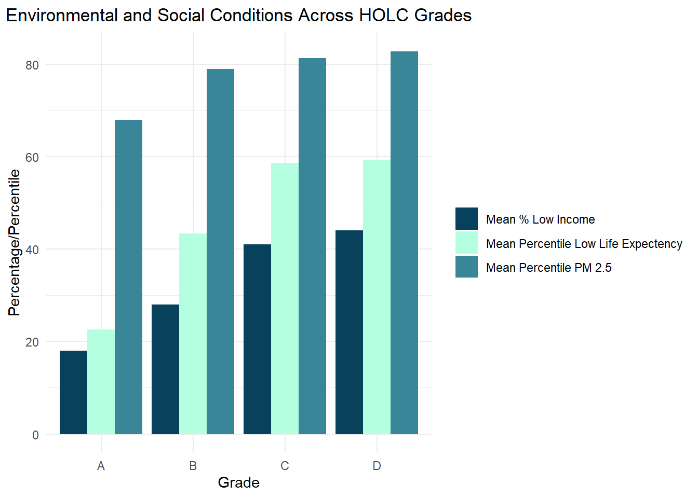
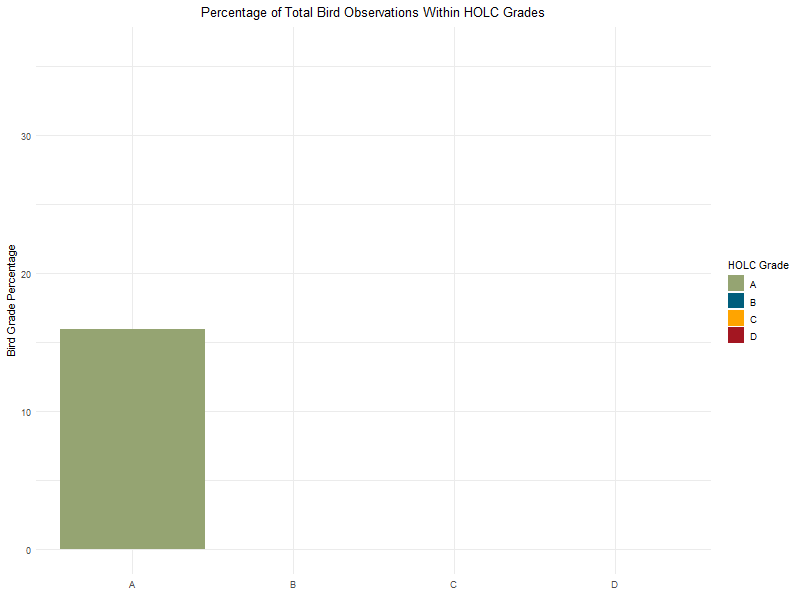
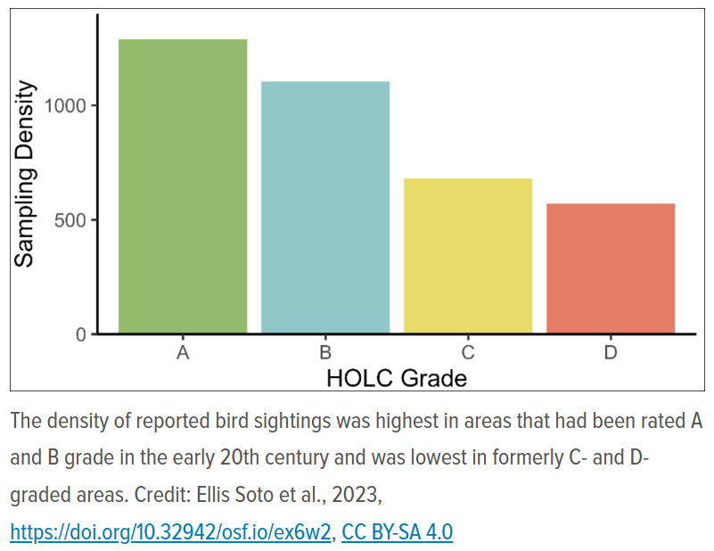
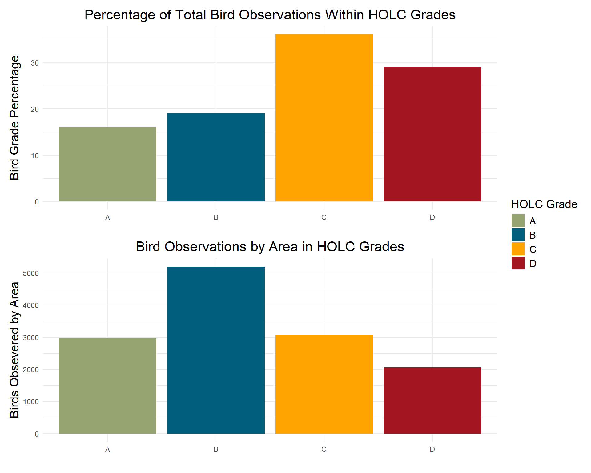

library(sf)
library(tidyverse)
library(tmap)
library(stars)
library(kableExtra)
library(here)
library(dplyr)
library(tidyr)
library(patchwork)
library(knitr)
library(gganimate)
library(grid)Environmental Justice and Biodiversity
Exploring the Legacy of Redlining in US Cities and Its Impact on Biodiversity
Objective: Explore historical redlining in Los Angeles and its legacy on present-day environmental justice
Load Packages and Read Data
Read in data
Code
# Read in data with here
la_red <- st_read(here::here("data", "mapping-inequality", "mapping-inequality-los-angeles.json"), quiet = TRUE) %>%
st_make_valid()
# Read in bird biodiversity data
birds <- st_read(here::here("data", "gbif-birds-LA", "gbif-birds-LA.shp"), quiet = TRUE)
# Read in ejscreen data
ejscreen <- st_read(here::here("data", "ejscreen", "EJSCREEN_2023_BG_StatePct_with_AS_CNMI_GU_VI.gdb"), quiet = TRUE)Check the coordinate system
Code
# Create a warming message that compares each data frame's geometry. Use if() to create warning message that will let you know if the boolean values, when comparing CRS's, is false
if (!(st_crs(ejscreen) == st_crs(birds) &&
st_crs(birds) == st_crs(la_red) &&
st_crs(la_red) == st_crs(ejscreen))) {
warning("CRS do not match! Consider transforming!")
} else {
message("All CRS match")
}Warning: CRS do not match! Consider transforming!Transform coordinate system for ejscreen to match la_red
Code
# Transform la_red to match ejscreen coordinate system
ejscreen <- st_transform(ejscreen, crs = st_crs(la_red))Check the coordinate system again
Code
# Use same if statement to check for after transforming
if (!(st_crs(ejscreen) == st_crs(birds) &
st_crs(birds) == st_crs(la_red) &&
st_crs(la_red) == st_crs(ejscreen))) {
warning("CRS do not match! Consider transforming")
} else {
message("All CRS match")
}All CRS matchFilter ejscreen data counties that make our base map
Code
# Use filter to filter data for LA, Orange, and San Bernardino Counties
los_ang_county <- ejscreen %>%
filter(CNTY_NAME == "Los Angeles County")
orange_county <- ejscreen %>%
filter(CNTY_NAME == "Orange County")
san_bern_county <- ejscreen %>%
filter(CNTY_NAME == "San Bernardino County")
california <- ejscreen %>%
filter(STATE_NAME == "California")Make a map of neighborhoods colored by HOLC grades
Code
# Use tmap package to make holc map
main_map <- tm_shape(los_ang_county,
bbox = la_red) +
tm_polygons(border.col = "black",
col = "seashell1") +
tm_shape(la_red) +
tm_polygons("grade", palette = c("#95A472",
"#005E7C",
"#FFA400",
"#A31621"),
title = "HOLC Grade",
border.alpha = .4,
border.col = "black",
alpha = .7) +
tm_shape(san_bern_county) +
tm_polygons(border.alpha = .1,
col = "seashell1") +
tm_shape(orange_county) +
tm_polygons(border.alpha = .1,
col = "seashell1") +
tm_layout(
title = "Los Angeles County",
title.fontfamily = "fantasy",
title.fontface = "bold",
title.size = 2,
title.position = c(.63, "top"),
legend.title.size = 1.7,
legend.text.size = 1.2,
legend.position = c("LEFT", .067),
legend.bg.color = NA,
bg.color = "seashell1") +
tm_scale_bar(position = c("RIGHT", "BOTTOM"),
text.size = 0.5
) +
tm_compass(type = "8star",
position = c("left", .3),
size = 4
) +
tm_credits("Historical Redlined Districts",
size = 1,
fontfamily = "fantasy",
fontface = "bold",
position = c(.67, .895))
# I used tmap_options to fix an issue when using my filtered California geometry data. According to stake overflow, it fixes invalid geometries
tmap_options(check.and.fix = TRUE)
# Set my bbox for the rectangle I will use to highlight my focus area within California
bbox_la_red <- st_bbox(la_red)
# Create a polygon for the rectangle. St_as_sfc uses my bbox area, set by la_red, to a polygon
rect_la_red <- st_as_sfc(bbox_la_red)
# Create an inset map
inset_map <- tm_shape(california) +
tm_polygons(border.col = "black", border.alpha = .1, col = "seashell1") +
tm_shape(rect_la_red) +
tm_borders(col = "red", lwd = 2) +
tm_layout(bg.color = "seashell1")
# Print the main map that the inset will sit on
print(main_map)
# Use viewport to create a small map or "window", print the inset map and set vp = vp to use the saved viewing window
vp <- viewport(x = 0.75, y = 0.26, width = 0.33, height = 0.33, just = c(.29, .6))
print(inset_map, vp = vp)
A table summarizing the percent of current census block groups within each HOLC grade (or none)
Code
# Join la_red and los_ang_county data with st_intersects to see what percentage of current census block groups are within each HOLC grade
la_red_ej_join <- st_join(los_ang_county, la_red, st_intersects, left = FALSE)
# Calculate the percent of census block groups within each HOLC grade
summary_holc <- la_red_ej_join %>%
group_by(grade) %>%
summarise(count = n()) %>%
mutate(percent = round((count / sum(count)) * 100, 0)) %>%
st_drop_geometry() %>%
select(-count)
# Create the table with kableExtra
knitr::kable(summary_holc,
col.names = c("HOLC Grade", "% of Current Census Block"),
format = "markdown",
caption = "Percentage of Current Census Block Groups Within HOLC Grade") %>%
kable_styling(full_width = FALSE,
position = "float_left")| HOLC Grade | % of Current Census Block |
|---|---|
| A | 7 |
| B | 19 |
| C | 48 |
| D | 21 |
| NA | 5 |
A set of figures summarizing current conditions (from the EJScreen data) within HOLC grades using the mean of the following variables:
- % low income
- percentile for Particulate Matter 2.5
- percentile for low life expectancy
Join data. Filter data for making a table and graph
Code
# Spatial join data la_red with los_ang_county using within
joined_data <- st_join(los_ang_county, la_red, join = st_within)
# Filter, Select and summarize columns for mean. Group by grade
holc_mean_filter <- joined_data %>%
filter(!is.na(grade)) %>%
select(LOWINCPCT,
P_PM25,
P_LIFEEXPPCT,
grade) %>%
group_by(grade) %>%
summarise(across(c(LOWINCPCT,
P_PM25,
P_LIFEEXPPCT),
list(mean = ~ round(mean(.x, na.rm = TRUE), 2)),
.names = "mean_{col}")) %>%
mutate(mean_LOWINCPCT = mean_LOWINCPCT * 100) %>%
st_drop_geometry()Make data long and plot it with geom_bar
Code
# Gather data into long format
long_data_holc_mean <- holc_mean_filter %>%
pivot_longer(cols = c(mean_LOWINCPCT, mean_P_PM25, mean_P_LIFEEXPPCT), names_to = "variable", values_to = "value")
# Create the bar graph
holc_bar_mean <- ggplot(long_data_holc_mean,
aes(x = grade,
y = value,
fill = variable)) +
geom_bar(stat = "identity", position = "dodge") +
scale_fill_manual(
values = c("mean_P_PM25" = "#388697",
"mean_LOWINCPCT" = "#08415C",
"mean_P_LIFEEXPPCT" = "#B5FFE1"),
labels = c("mean_P_PM25" = "Mean Percentile PM 2.5",
"mean_P_LIFEEXPPCT" = "Mean Percentile Low Life Expectency",
"mean_LOWINCPCT" = "Mean % Low Income")) +
labs(title = "Environmental and Social Conditions Across HOLC Grades",
x = "Grade",
y = "Percentage/Percentile") +
theme_minimal() +
theme(legend.title = element_blank(),
plot.title = element_text(hjust = 0.5))
# Print
print(holc_bar_mean)
Create table of mean values with kable
Code
# First I want to round my P_PM25 column to have the same sig-figs as my other two columns
holc_mean_filter$mean_P_PM25 <- round(holc_mean_filter$mean_P_PM25, 0)
# Create mean table with kableExtra
kable(holc_mean_filter,
caption = "Environmental and Social Conditions Across HOLC Grades",
col.names = c("Grade", "Mean % Low Income",
"Mean Percent PM25",
"Mean Percentile Low Life Expectency"),
format = "markdown")| Grade | Mean % Low Income | Mean Percent PM25 | Mean Percentile Low Life Expectency |
|---|---|---|---|
| A | 18 | 68 | 22.60 |
| B | 28 | 79 | 43.38 |
| C | 41 | 81 | 58.58 |
| D | 44 | 83 | 59.28 |
Interpretation
The table shows each Grades A-D, a rating system ranked from best to poorest based on their perceived safety for real estate investment. The table shows a clear connection between the three means we selected. As the grade decreases from A to D, the mean percentage of low income, percentile of PM 2.5, percent of the population with a low life expectancy all go up. This shows that neighborhoods in the D sections, almost always occupied by minorities, suffered in all of these categories due to redlining.
Part 2: Legacy of redlining in biodiversity observations
Combine data from la_red and birds by geometry
Code
# Use st_join to combine la_red data to birds
joined_birds <- st_join(birds, la_red, join = st_within, left = TRUE)Check first 10 rows of data with head (Hiding from HTML)
Code
# print first 10 lines to check for grade
head(joined_birds, 10)Produce the following based on observations from 2022:
A figure summarizing the percent of observations within redlined neighborhoods within each HOLC grade
Code
# Filter data for year 2022, group by grade, exclude NA's, summarise the count of grade, mutate a new column with percent of bird observations by grade, select only the columns grade and bird grade pct for plot, drop geometry
holc_birds <- joined_birds %>%
filter(year == 2022) %>%
group_by(grade) %>%
filter(grade != "NA") %>%
summarise(count_id = n()) %>%
mutate(bird_grade_pct = round(count_id/sum(count_id) * 100),2) %>%
select(grade, bird_grade_pct) %>%
st_drop_geometry()
# Use ggplot to make to plot "Percentage of Total Bird Observations Within HOLC Grades"
plot1 <- ggplot(holc_birds, aes(x = grade, y = bird_grade_pct, fill = grade)) +
geom_bar(stat = "identity") +
scale_fill_manual(values = c("A" = "#95A472",
"B" = "#005E7C",
"C" = "#FFA400",
"D" = "#A31621")) +
labs(title = "Percentage of Total Bird Observations Within HOLC Grades",
x = "",
y = "Bird Grade Percentage",
fill = "HOLC Grade") +
theme_minimal() +
theme(axis.title.y = element_text(size = 15),
plot.title = element_text(hjust = 0.5, size = 17),
legend.text = element_text(size = 12),
legend.title = element_text(size = 14)
)
# The code below was used in plot1for creating the animation gif but needs to be removed for patchwork. For transparency, I am including it but # it out
# + transition_states(grade, transition_length = 1, state_length = 1) +
# enter_grow() +
# shadow_mark() +
# ease_aes('linear')
# Use gganimate to create an animated bar graph and save! # out the animate used to create the gif for rendering. Leaving code in for transparency
# animate(plot1, nframes = 100, fps = 10, width = 800, height = 600, renderer = gifski_renderer("animated_bar.gif"))
knitr::include_graphics("animated_bar.gif")
Why These Results may differ from
When you look the plot for “Percentage of Total Bird Observations Within HOLC Grades” it appears that bird observations actually increase as you move down from HOLC Grades A-D. Meaning, the riskier the real estate investment (i.e. redlined neighborhoods with high minority populations) the more birds you observe. This seems completely opposite to the findings of Ellis-Soto (shown in the image below), who showed bird density decreased from HOLC A to HOLC D, with D being the lowest density.
Code
# Use knitr to include image from Ellis-Soto study
knitr::include_graphics("Ellis_Soto.png")
One reason for this could be area. If you look at the map you will see that C and D make up a larger portion of the HOLC map than grades A and B. This leads to more bird observations simply because you have more area to see more birds. You can account for this by taking the total bird count for each grade and dividing it by the total area for each grade, giving you a more accurate value.
Filter a new data set that includes total area and count of bird observations for each HOLC grade
Code
# Filter joined data for 2022 and exclude NA's, group by grade and summarise total area and grade count, mutate a new column called bird_count_area that calculates grade divided by total area, select columns grade and bird_count_area, drop geometry.
pct_bird_obs_area <- joined_birds %>%
filter(year == 2022, (grade != "NA")) %>%
group_by(grade) %>%
summarise(
total_area = sum(area, na.rm = TRUE),
grade_count = n()) %>%
mutate(bird_count_area = grade_count/total_area) %>%
select(grade, bird_count_area) %>%
st_drop_geometry()Create a new plot with filtered HOLC grade and area, combined the plots for comparison
Code
# Use ggplot to plot "Bird Observations by Area in HOLC Grades"
plot2 <- ggplot(pct_bird_obs_area, aes(x = grade, y = bird_count_area, fill = grade)) +
geom_bar(stat = "identity") +
scale_fill_manual(values = c("A" = "#95A472",
"B" = "#005E7C",
"C" = "#FFA400",
"D" = "#A31621")) +
labs(title = "Bird Observations by Area in HOLC Grades",
x = "",
y = "Birds Obsevered by Area",
fill = "HOLC Grade") +
theme_minimal() +
theme(axis.title.y = element_text(size = 15),
plot.title = element_text(hjust = 0.5, size = 17),
legend.text = element_text(size = 12),
legend.title = element_text(size = 14)
)Combined the plots for comparison
Code
# Use patchwork to combine plots and save it as new variable
combined_plots <- patchwork::wrap_plots(plot1, plot2, ncol = 1,
guides = 'collect')
# Print
print(combined_plots)
Interpretation
When area of each HOLC grade is accounted for, total bird observations were more on par with the findings of Ellis Soto. Meaning, these communities are still feeling the impacts of century old legislation.
Data Citations
United States Environmental Protection Agency. (2024). Purposes and Uses of EJSCREEN. EPA.gov. Retrieved from https://www.epa.gov/ejscreen/purposes-and-uses-ejscreen
University of Richmond Digital Scholarship Lab. (2024). Mapping Inequality: Redlining in New Deal America. Retrieved from https://dsl.richmond.edu/panorama/redlining/data
EDS 223 Geospatial Analysis. (2024). Assignments - gbif.org. Retrieved from https://eds-223-geospatial.github.io/assignments/gbif.org